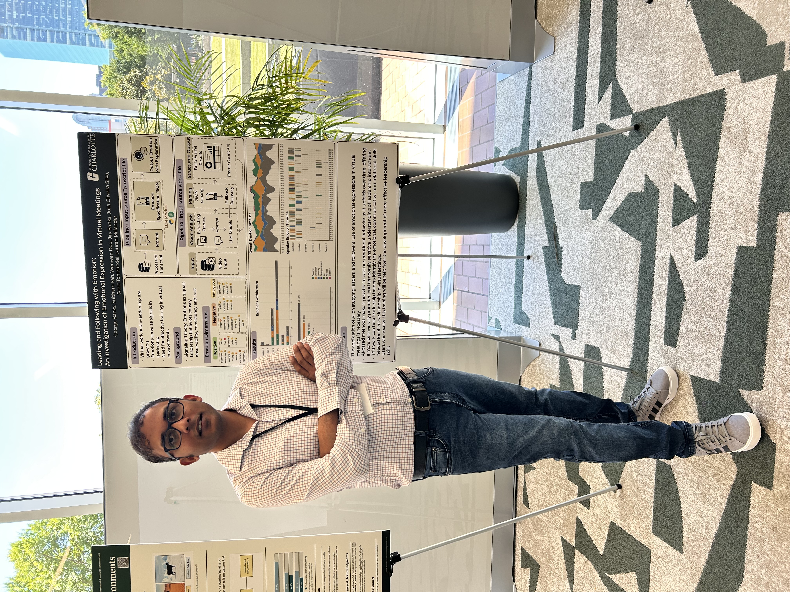
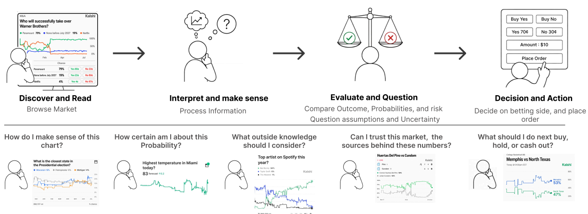
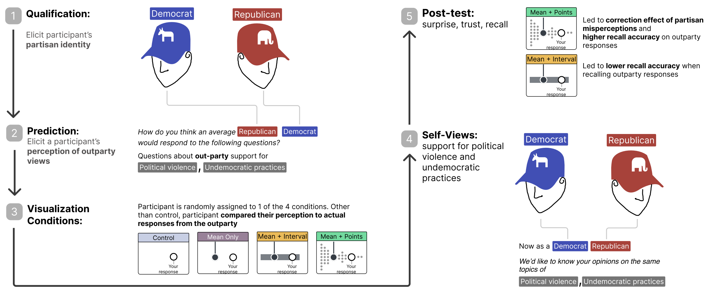
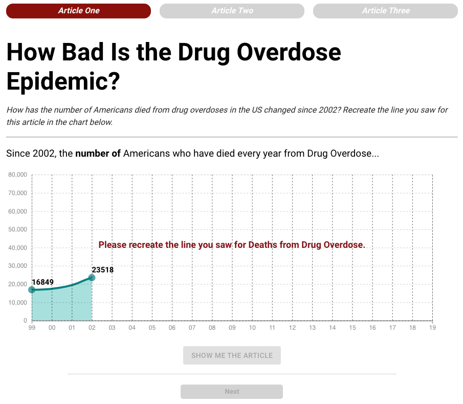
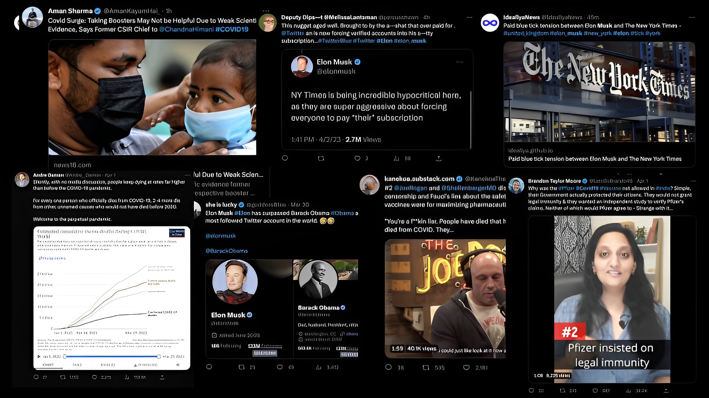
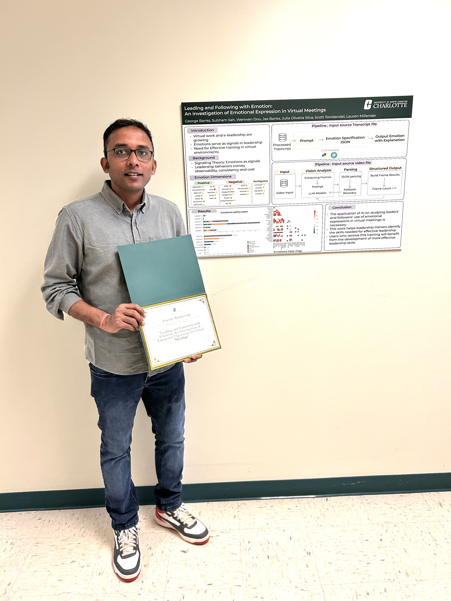
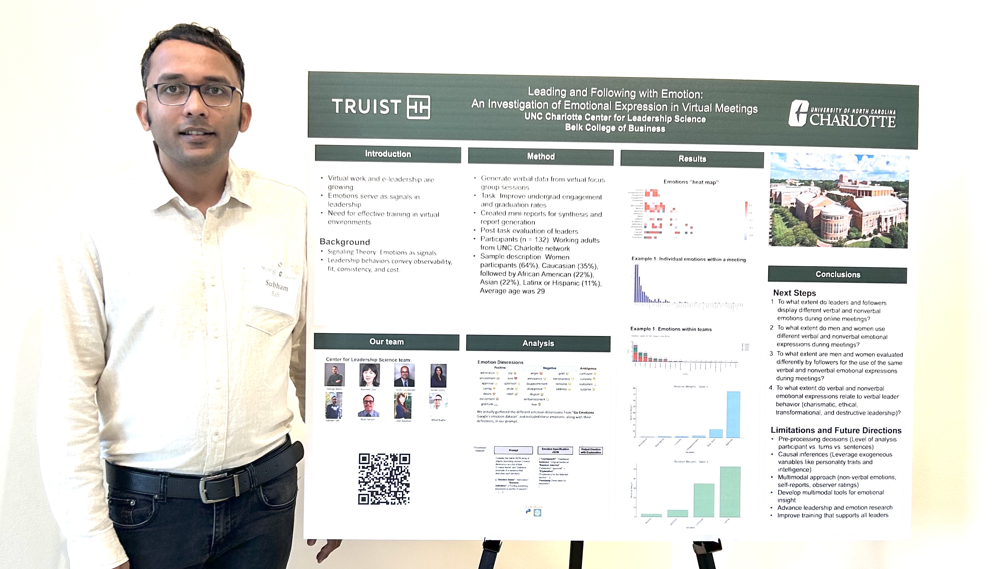
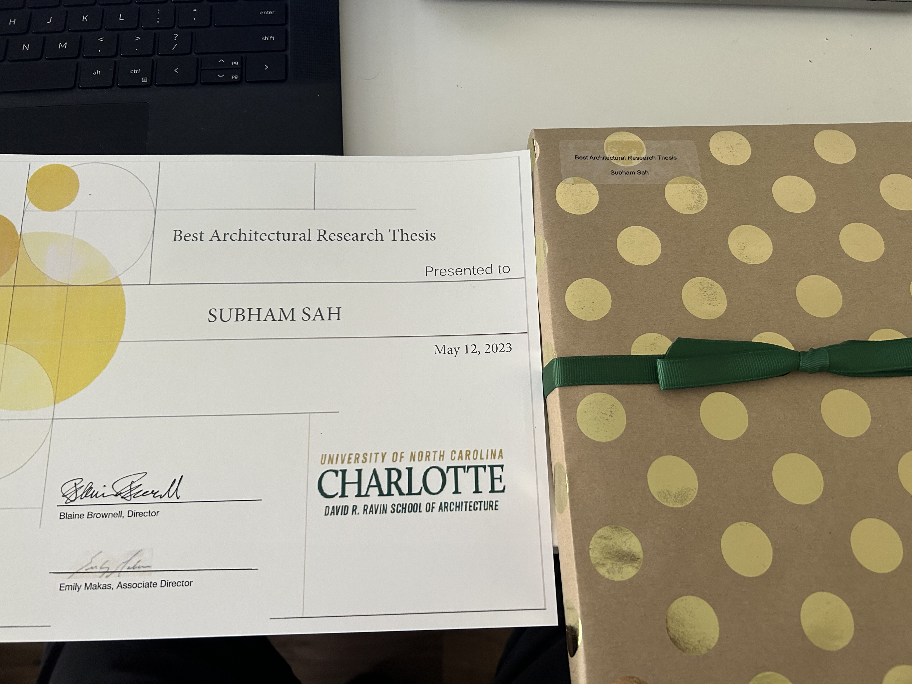
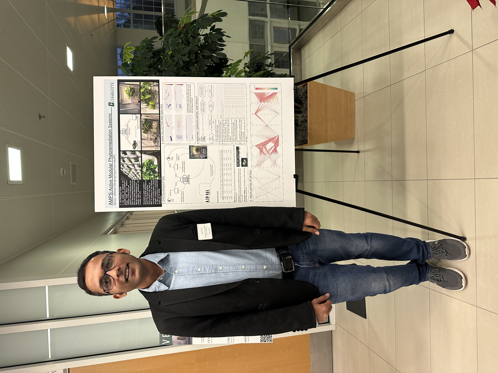

{kind=link}

May 2026
Presented a poster at the ThinkAI Symposium 2026 on The application and development of AI Models on studying leaders’ and followers’ use of emotional expressions in virtual meetings
UNC Charlotte

Researcher in visual analytics and human-computer interaction
University of North Carolina at Charlotte
I study how people make sense of data, and how the design of visualizations and language-based interfaces can support more accurate, reflective decision-making. My research sits at the intersection of visual analytics, human-computer interaction, and natural language interfaces, with a particular interest in belief updating, uncertainty, and human-centered uses of large language models.
I work with collaborators in computing and cognitive science at UNC Charlotte. Recent projects examine how data visualizations can correct partisan misperceptions, how elicitation and narrative framing change engagement with data-driven news, and how large language models can translate natural-language questions into inspectable analytic specifications for visualization.
Visual analytics; uncertainty visualization; agentic AI; human-centered AI agents; natural language interfaces for visualization; social media data exploration; judgment and decision making.
Prediction market visualizations, betting, and uncertainty: A study of Reddit Posts and Comments
IEEE VIS Uncertainty Visualization Workshop, 2026.
Correcting Misperceptions at a Glance: Using Data Visualizations to Reduce Political Sectarianism
IEEE Transactions on Visualization and Computer Graphics, 32(1), 1361–1371, 2026.
NLVIZ Workshop, IEEE VIS, 2024.
IEEE Transactions on Visualization and Computer Graphics, 30(7), 4375–4389, 2024.
Interactive Topic Guided Thematic Analysis for Social Media Data
M.S. thesis, University of North Carolina at Charlotte, 2022.

How people infer uncertainty from prediction market charts and connect those interpretations to betting decisions.

How different representations of out-party views shape belief correction and recall.

Translating natural-language queries into explainable analytic specifications for visualization.

How drawing predictions and contrasting narratives affect engagement, recall, and attitude change.

Interactive computational support for qualitative analysis of large social media corpora.

May 2026
UNC Charlotte

April 2026
UNC Charlotte

April 2025
UNC Charlotte

December 2022
UNC Charlotte

December 2022
UNC Charlotte
{kind=link}
{kind=link}
{kind=link}
{kind=link}